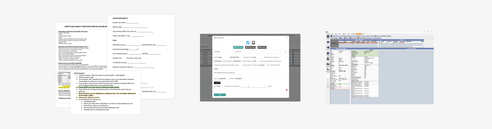
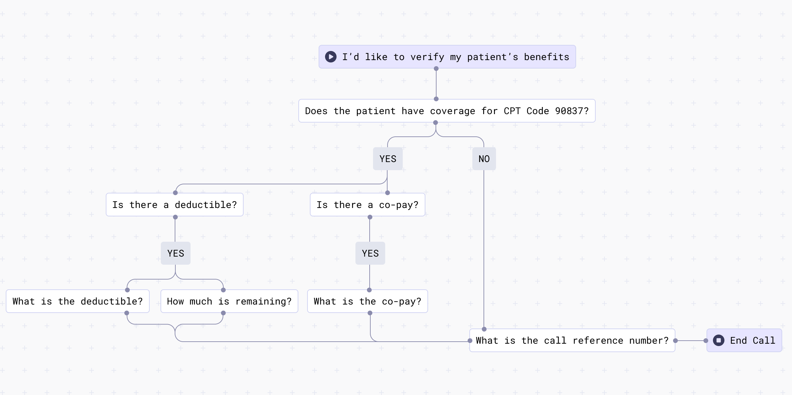
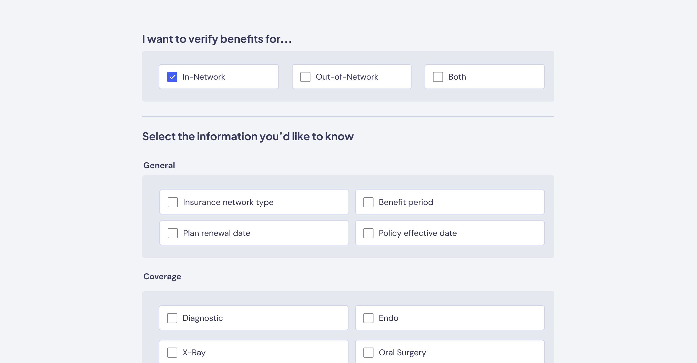
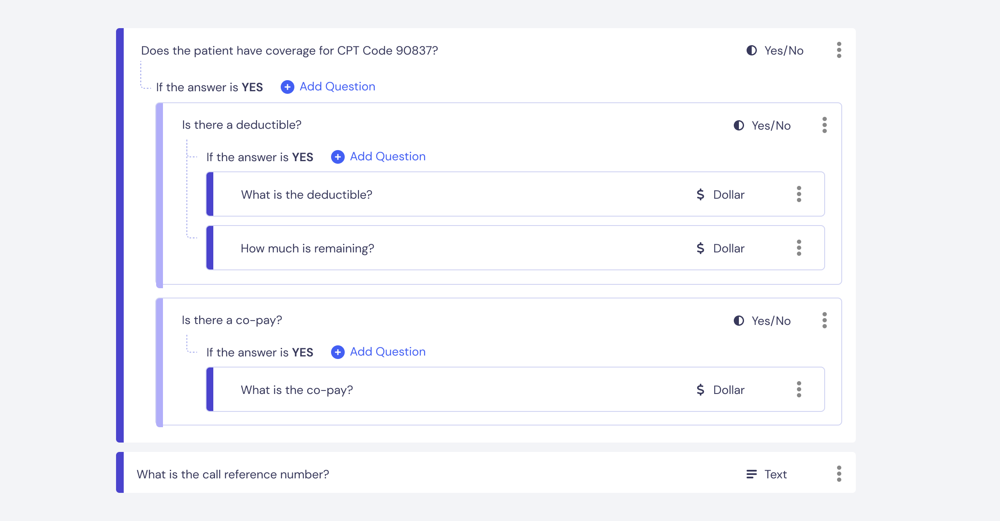
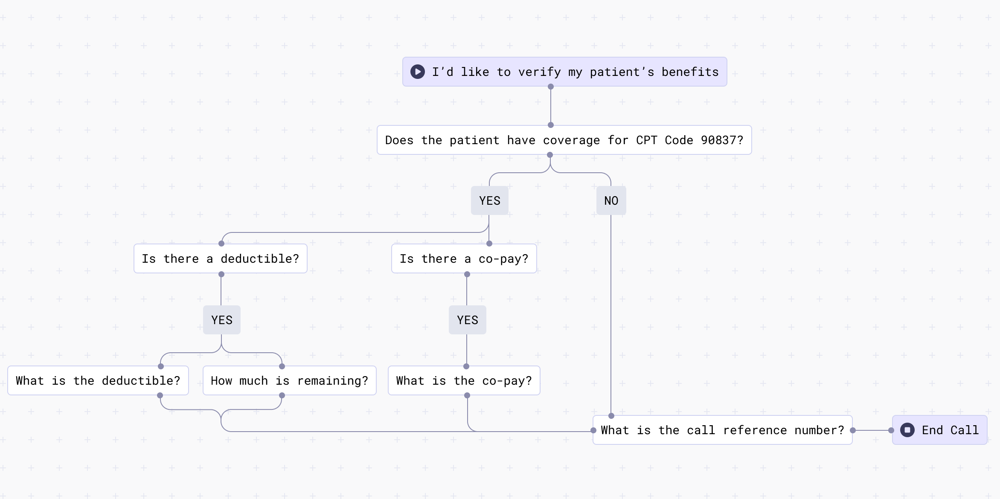
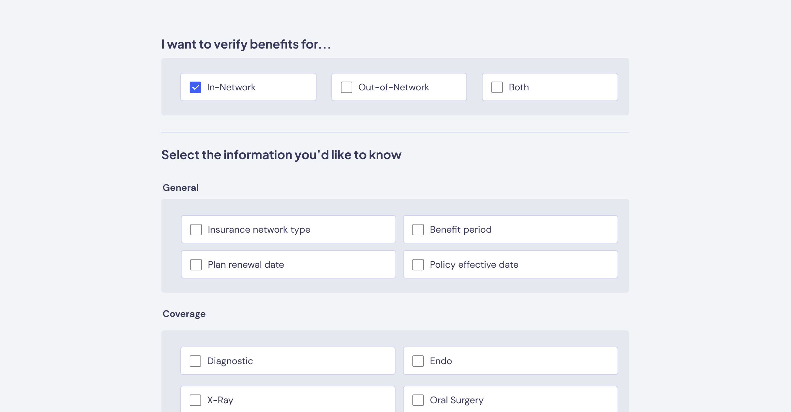
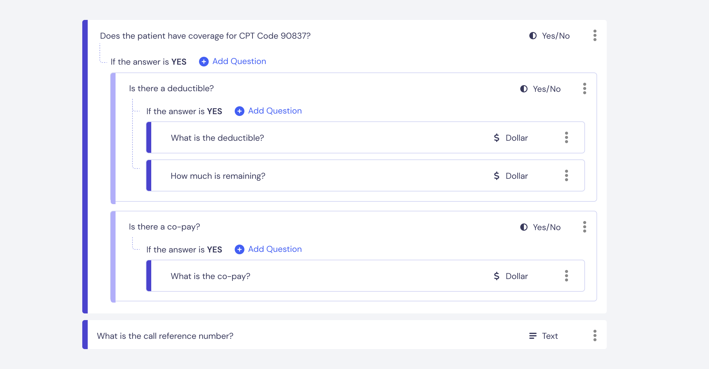

Problem
Devise a "formula" for customers to describe the answers they need from the automated calls, and make this solution work for a wide range of call complexities. The solution must also be easily understood by our AI "brain".
User Research

Customers came to us with the full gambit of ways in which they standardized their calls. Provider offices might have a literal script, prescribing exactly what the receptionist should say down to the call introduction. Larger healthcare Revenue Cycle Management (RCM) companies, on the other hand, came to us with their own form-filling system, and yet others just entered relevant information into a Practice Management Software without utilizing a "script".
Requirements
After understanding the variety of existing paradigms, I came up with requirements. We needed to design a Script Builder that would be straightfoward and easy-to-use (Ops teams made it clear they don't have the time or technical background to deal with a complicated onboarding process), and the core design needed to be flexible enough for us to evolve as we acquired more use cases.
Frameworks considered
I considered a variety of directions for our script builder, and they mostly boiled down to three categories:
Decision Model
 I first considered a "node model" design that could handle extremely complex scripts. Users could define questions, utilize condition operators... they could customize a script to exactly suit their needs. I quickly realized that 1. this design would seem too daunting for a non-technical user to take on, and we'd probably end up being the ones creating their scripts for them; 2. our customers don't really care about how we're getting to the answers on this detailed of a level; and 3. This decision tree would be too rigid for our AI to flexibily make decisions if something didn't exactly follow the flow. This option would be over-designing
Answer Checklist

I then looked at a completely opposite approach. Instead of defining questions, just tell us what answers you're looking for by checking all the responses you want. We'd write the corresponding questions internally and let AI figure out when to ask them, and this would allow us to "standardize" questions more which could help AI accuracy (anytime someone wants to know their out-of-pocket max, we can ask it the same way). However, while this approach simplified things for our back-end team and supposedly simplified things for our customers, they wanted more flexibility and control over the process. This option was too inflexible.
Form Builder

So, we arrived at a Goldilocks solution where I took the positives of the two former approaches and designed a google form-esque Script Builder that had the flexibility of defining what questions to ask and when to ask them, but with a simplicity that doesn't feel daunting.
Decision Model
 I first considered a "node model" design that could handle extremely complex scripts. Users could define questions, utilize condition operators... they could customize a script to exactly suit their needs. I quickly realized that 1. this design would seem too daunting for a non-technical user to take on, and we'd probably end up being the ones creating their scripts for them; 2. our customers don't really care about how we're getting to the answers on this detailed of a level; and 3. This decision tree would be too rigid for our AI to flexibily make decisions if something didn't exactly follow the flow. This option would be over-designing
Answer Checklist

I then looked at a completely opposite approach. Instead of defining questions, just tell us what answers you're looking for by checking all the responses you want. We'd write the corresponding questions internally and let AI figure out when to ask them, and this would allow us to "standardize" questions more which could help AI accuracy (anytime someone wants to know their out-of-pocket max, we can ask it the same way). However, while this approach simplified things for our back-end team and supposedly simplified things for our customers, they wanted more flexibility and control over the process. This option was too inflexible.
Form Builder

So, we arrived at a Goldilocks solution where I took the positives of the two former approaches and designed a google form-esque Script Builder that had the flexibility of defining what questions to ask and when to ask them, but with a simplicity that doesn't feel daunting.
Final Thoughts & Implementation
We implemented v1 of our Script Builder in Fall 2023 and have continued iterating since. The Script Builder evolves as we gain greater clarity on use cases - for example, we've found that many customers want similar scripts, so we've created sample "base" scripts that get you 70% of the way there. Our core design didn't box us into a corner, which has allowed us to easily adapt to changes. The Script Builder isn't some ground-breaking feature, but it manages to suit the complex needs of our customers while being easy to understand, and I'm quite happy with that.